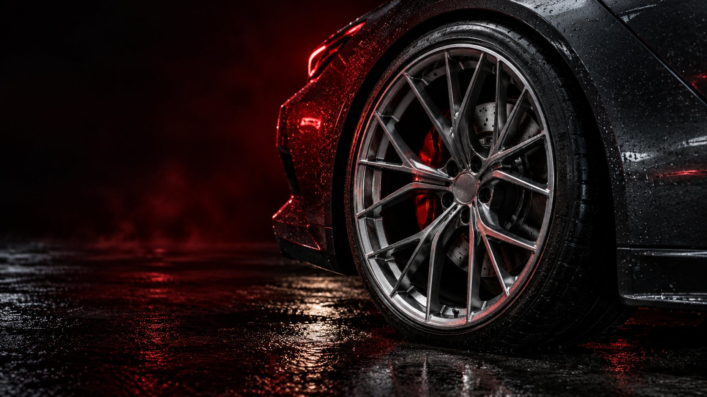
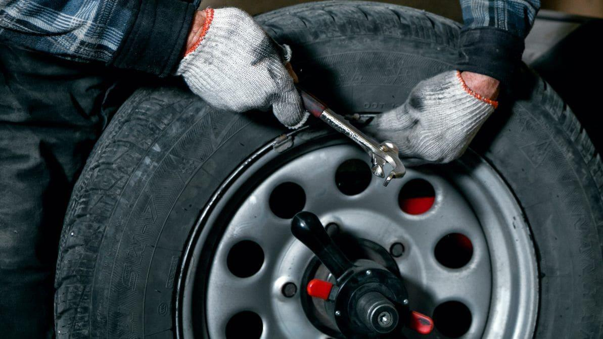
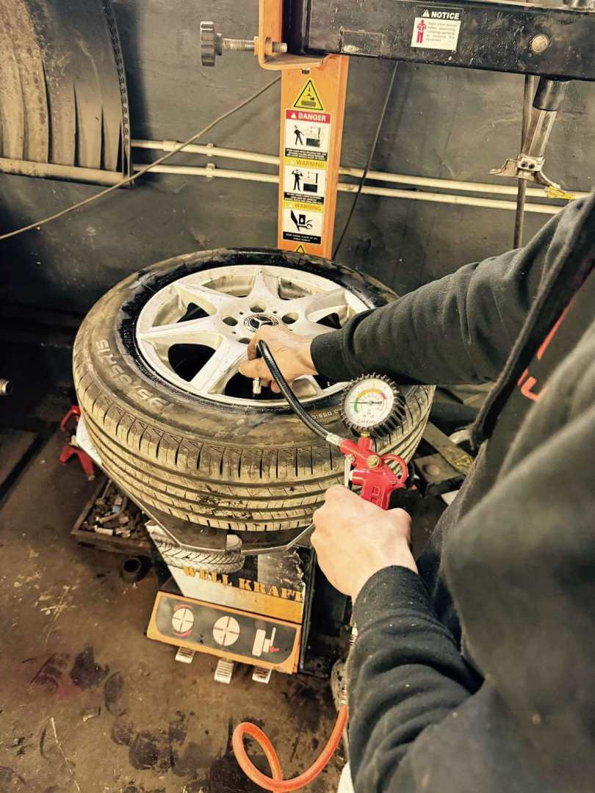

01
Сезонна заміна
З літніх на зимові. І навпаки.
Перевзуємо авто до нового сезону.

ШИНОМОНТАЖ / ЗЕЛЕНА, 20
ДЕМОНСТРАЦІЙНИЙ КОНЦЕПТ САЙТУЗаміна шин, балансування та ремонт.
Твій шиномонтаж у центрі Львова.
01 / ПОСЛУГИ
Час змінити сезон, прибрати вібрацію
чи відремонтувати прокол? Заїжджай.
З літніх на зимові. І навпаки.
Перевзуємо авто до нового сезону.
Коли кермо вібрує, а рух
перестає бути комфортним.
Прокол — ще не привід
прощатися з улюбленою шиною.
Нові та вживані шини для легкових авто й мікроавтобусів. Наявність уточнюйте телефоном.
Уточнити наявність02 / ВАРТІСТЬ
Оберіть діаметр колеса та послугу.
Дізнайтеся орієнтир перед записом.
Ці суми показують, як працюватиме нова сторінка. Актуальні ціни потрібно погодити із сервісом.
У прикладі комплексу:
Фінальну вартість майстер уточнює після огляду. Run-flat та додаткові роботи — окремо.
03 / У РОБОТІ
Від обладнання до останньої перевірки.
Фото з галереї ТО-АВТОСЕРВІС.


04 / ЯК ЗАЇХАТИ
Львів, Галицький район
Для маршруту вкажіть адресу заїзду.
05 / ЗАПИС НА СЕРВІС
Залиште контакт і послугу —
так виглядатиме запис на новому сайті.
Демо Форма демонструє сценарій запису. Дані не надсилаються й не зберігаються.
ДЕМОНСТРАЦІЯ ЗАПИСУ
Це демо: заявку не надіслано. На робочому сайті її отримає адміністратор. Зараз записатися можна телефоном.
Зателефонувати до сервісуКОРИСНО ЗНАТИ
Адреса сервісу — вул. Зелена, 20, Львів. Заїзд з площі Петрушевича, 3. Кнопка «Прокласти маршрут» відкриває маршрут до адреси заїзду.
Для консультації та запису зателефонуйте: 097 872 20 20 або 093 872 20 20. Узгодьте зручний час із майстром, особливо в сезон заміни шин.
Так, ТО-АВТОСЕРВІС пропонує нові та вживані шини для легкових авто й мікроавтобусів. Ціни та наявність потрібного розміру уточнюйте телефоном.
Це демонстраційний прототип. Цифри в калькуляторі — приклад подачі прайсу, а не підтверджені ціни ТО-АВТОСЕРВІС. Реальну вартість уточнюйте за телефоном 097 872 20 20.
Наступний поворот —
з упевненістю.